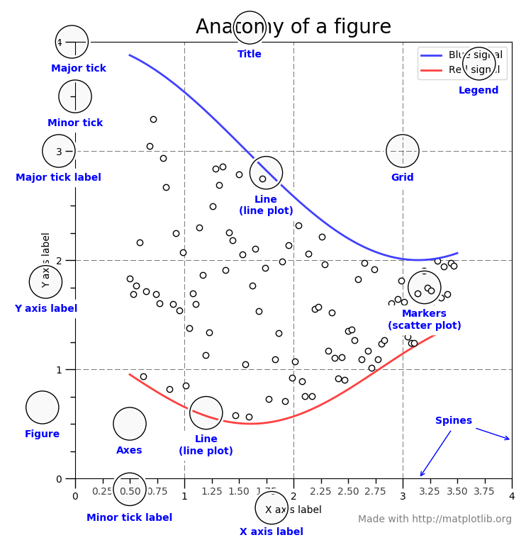

3.1 Data Visualization¶
Additional Assigned Reading¶
Ten Simple Rules for Better Figures Rougier, N. P., Droettboom, M., & Bourne, P. E. (2014), Ten Simple Rules for Better Figures. PLOS Computational Biology.
Visualization¶
Effective data visualization helps with data analysis and interpretation, but is also crutial for communicating your findings. matplotlib is the primary Python for plotting. The matplotlib website has extensive documentation, tutorials, and gallery examples.
Basic Default Plot¶
After importing the matplotlib package and loading or calculating the variables you wish to plot, you will call matplotlib functions to create your figure. fig, ax = plt.subplots() creates the figure object with a single axes. ax.plot(x,y) adds the data you want to plot to the figure.
import matplotlib
import matplotlib.pyplot as plt
import numpy as np
# Data for plotting, a simple sine wave
t = np.arange(0.0, 2.0, 0.01)
s = 1 + np.sin(2 * np.pi * t)
fig, ax = plt.subplots()
ax.plot(t, s)
[<matplotlib.lines.Line2D at 0x1125bf950>]
This quick-simple plot may be useful for you checking your data, but it’s nearly useless for communication. There are many possible figure components you should consider when making your figure.

For example we should add labels to our simple figure. This can be done with ax.set(). We’ll also add a grid with ax.grid().
import matplotlib
import matplotlib.pyplot as plt
import numpy as np
# Data for plotting, a simple sine wave
t = np.arange(0.0, 2.0, 0.01)
s = 1 + np.sin(2 * np.pi * t)
fig, ax = plt.subplots()
ax.plot(t, s)
ax.set(xlabel='t', ylabel='s', title='Bare Necessities Plot')
ax.grid()
fig.savefig("test.png")
There, we have done the bare minimium to have a readable figure. It can be saved with fig.savefig(). But we should continue and learn more tools for making good publication quality figures.
Using Additional Plot Features¶
There are many strategies for making good scientific figures. The primary goal is clarity, rather than asthetic, but bad plots are also often ugly. The first thing to consider are your axises: they should be clearly labeled with a descriptive label that includes units.
# We can use the same data again, we don't need to import matplotlib or declare t and s again
fig, ax = plt.subplots()
ax.plot(t, s)
plt.title('Simple Plot', fontsize=20)
plt.xlabel('time (s)', fontsize=16)
plt.ylabel('wave height (m)', fontsize=16)
plt.xticks(fontsize=12)
plt.yticks(fontsize=12)
ax.grid()
If you are plotting more than one dataset together on the same axises you should make it clear to the reader what the two datasets are with a legend using plt.lengend(). You can also differentiate them but plotting with different line or marker types.
# declare a second variable to plot
s2 = 1 + np.sin( np.pi * t)
# We can use the same data again, we don't need to import matplotlib or declare t and s again
fig, ax = plt.subplots()
ax.plot(t, s,'-',label='Day 1')
ax.plot(t, s2,'--',label='Day 2')
plt.title('Simple Plot', fontsize=20)
plt.xlabel('time (s)', fontsize=16)
plt.ylabel('wave height (m)', fontsize=16)
plt.xticks(fontsize=12)
plt.yticks(fontsize=12)
ax.grid()
plt.legend()
<matplotlib.legend.Legend at 0x113552a10>